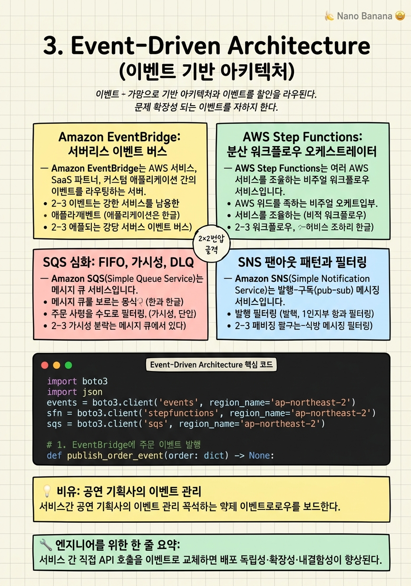

Event-Driven Architecture

🎯 학습 목표
- EventBridge 규칙과 스케줄로 이벤트 라우팅을 설계할 수 있다
- Step Functions State Machine으로 분산 트랜잭션을 오케스트레이션할 수 있다
- SQS FIFO와 표준 큐의 차이를 프로덕션 시나리오에 적용할 수 있다
- Saga 패턴으로 마이크로서비스 간 데이터 일관성을 보장할 수 있다
- Dead Letter Queue와 재처리 전략을 설계할 수 있다
현대 클라우드 아키텍처에서 이벤트 기반 설계(Event-Driven Architecture, EDA)는 마이크로서비스 간 결합도를 낮추고 확장성을 극대화하는 핵심 패러다임입니다. 서비스들이 직접 API를 호출하는 대신 이벤트를 발행하고 구독하는 방식으로 통신하면, 각 서비스는 독립적으로 배포하고 스케일링할 수 있습니다.
AWS는 EDA를 위한 세 가지 핵심 서비스를 제공합니다. Amazon EventBridge는 이벤트 버스로서 AWS 서비스 이벤트, SaaS 이벤트, 커스텀 이벤트를 라우팅합니다. AWS Step Functions는 여러 서비스를 조율하는 상태 머신 오케스트레이터입니다. Amazon SQS/SNS는 메시지 큐와 발행-구독 패턴의 기반입니다.
이 챕터에서는 각 서비스의 내부 동작, 조합 패턴, 그리고 분산 시스템에서 가장 어려운 문제 중 하나인 분산 트랜잭션을 Saga 패턴으로 해결하는 방법을 다룹니다.
 이미지 출처: © Amazon Web Services, Inc. — What is Step Functions (교육 목적 인용)
이미지 출처: © Amazon Web Services, Inc. — What is Step Functions (교육 목적 인용)
핵심 내용
Amazon EventBridge: 서버리스 이벤트 버스
Amazon EventBridge는 AWS 서비스, SaaS 파트너, 커스텀 애플리케이션 간의 이벤트를 라우팅하는 서버리스 이벤트 버스입니다. 이전 이름은 CloudWatch Events였으며, 기능이 크게 확장되었습니다.
이벤트 버스 유형: Default 버스(AWS 서비스 이벤트), Custom 버스(애플리케이션 이벤트), Partner 버스(Datadog, Zendesk 등 SaaS 서비스 이벤트) 세 종류가 있습니다.
규칙(Rule)은 이벤트 패턴 매칭과 라우팅을 담당합니다. 규칙은 이벤트의 특정 필드를 매칭하는 JSON 패턴으로 정의합니다. 예를 들어 {"source": ["aws.s3"], "detail-type": ["Object Created"]} 패턴은 S3 객체 생성 이벤트만 필터링합니다.
EventBridge Pipes는 소스(SQS, DynamoDB Streams, Kinesis)에서 이벤트를 소비하여 필터링·변환하고, 타겟(Lambda, SageMaker Pipeline, Step Functions)으로 전달하는 통합 파이프를 제공합니다. Lambda 없이도 기본적인 변환 작업이 가능합니다.
EventBridge Scheduler는 크론 표현식이나 일회성 시간으로 이벤트를 스케줄링합니다. 수백만 개의 스케줄을 생성할 수 있어 SaaS에서 사용자별 알림이나 배치 작업 스케줄링에 활용됩니다.
AWS Step Functions: 분산 워크플로우 오케스트레이터
AWS Step Functions는 여러 AWS 서비스를 조율하는 비주얼 워크플로우 서비스입니다. Amazon States Language(ASL) JSON으로 상태 머신을 정의하며, 각 상태는 Task(작업), Choice(분기), Wait(대기), Parallel(병렬), Map(반복) 중 하나입니다.
Standard vs Express 워크플로우: Standard는 최대 1년 실행, Exactly-Once 보장, 실행 이력 저장. Express는 최대 5분, At-Least-Once, 고속 처리(초당 100,000 실행)입니다.
SDK Integration은 Step Functions이 Lambda를 거치지 않고 AWS SDK API를 직접 호출하는 기능입니다. arn:aws:states:::dynamodb:putItem처럼 상태 정의에 직접 DynamoDB, SQS, SNS, SageMaker 등 수백 개의 서비스를 호출할 수 있습니다. Lambda 비용과 레이턴시를 줄이는 핵심 최적화입니다.
오류 처리: Retry와 Catch로 재시도 로직과 오류 복구를 상태 머신 수준에서 정의합니다. 지수 백오프(BackoffRate)와 지터를 설정하여 thundering herd 문제를 방지합니다.
 이미지 출처: © Amazon Web Services, Inc. — What is Step Functions (교육 목적 인용)
이미지 출처: © Amazon Web Services, Inc. — What is Step Functions (교육 목적 인용)
SQS 심화: FIFO, 가시성, DLQ
Amazon SQS(Simple Queue Service)는 메시지 큐 서비스입니다. 표준 큐(Standard Queue)는 초당 무제한 처리량, At-Least-Once 전달, 최대 노력 순서 보장입니다. FIFO 큐는 초당 3,000 메시지(배치), Exactly-Once 처리, 엄격한 순서 보장입니다.
가시성 타임아웃(Visibility Timeout)은 소비자가 메시지를 처리하는 동안 다른 소비자에게 보이지 않는 시간입니다. 처리 완료 전 타임아웃이 만료되면 메시지가 다시 큐에 나타납니다. 처리 시간보다 충분히 길게 설정해야 하며, 처리 중 연장(change_message_visibility)도 가능합니다.
Dead Letter Queue(DLQ)는 처리에 계속 실패하는 메시지를 격리하는 별도 큐입니다. maxReceiveCount를 초과한 메시지가 자동으로 DLQ로 이동합니다. CloudWatch 알람으로 DLQ 메시지 수를 모니터링하여 운영 이슈를 감지합니다.
Long Polling은 빈 큐에 대한 폴링을 최대 20초까지 대기하여 빈 응답을 줄이고 비용을 절감합니다. ReceiveMessageWaitTimeSeconds를 20으로 설정하면 됩니다.
메시지 그룹 ID(FIFO)는 동일 그룹 내 메시지의 순서를 보장합니다. 예를 들어 주문 ID를 그룹 ID로 사용하면, 동일 주문의 이벤트(생성 → 결제 → 배송)가 항상 순서대로 처리됩니다.
SNS 팬아웃 패턴과 필터링
Amazon SNS(Simple Notification Service)는 발행-구독(pub-sub) 메시징 서비스입니다. 하나의 메시지를 여러 구독자에게 동시에 전달하는 팬아웃(fan-out) 패턴의 기반입니다.
SNS → SQS 팬아웃은 SNS 토픽에 여러 SQS 큐를 구독하여 메시지를 병렬로 처리하는 패턴입니다. 예를 들어 주문 이벤트를 SNS에 발행하면, 결제 서비스 큐, 재고 서비스 큐, 알림 서비스 큐가 동시에 메시지를 수신합니다.
메시지 필터링(Message Filtering)은 구독자별로 수신할 메시지를 JSON 속성 기반으로 필터링합니다. 예를 들어 결제 서비스는 {"event_type": ["order_placed", "order_cancelled"]} 필터로 관련 이벤트만 수신합니다. Lambda나 SQS를 통하지 않고 SNS 수준에서 필터링이 가능합니다.
FIFO SNS + FIFO SQS는 순서 보장이 필요한 팬아웃에 사용합니다. 이 조합은 금융 거래처럼 이벤트 순서가 중요한 시나리오에 적합합니다.
Saga 패턴: 분산 트랜잭션 처리
마이크로서비스 아키텍처에서 여러 서비스에 걸친 데이터 일관성을 유지하는 것은 어렵습니다. 2PC(2-Phase Commit)는 분산 환경에서 성능 문제와 단일 장애점을 만들기 때문에 클라우드 네이티브 환경에서는 Saga 패턴을 사용합니다.
Saga는 여러 로컬 트랜잭션의 시퀀스로, 각 단계가 성공하면 다음 단계로 진행하고, 실패하면 보상 트랜잭션(Compensating Transaction)으로 이전 단계들을 롤백합니다.
두 가지 구현 방식이 있습니다.
Choreography 방식: 각 서비스가 이벤트를 발행하고 다른 서비스의 이벤트를 구독하여 자율적으로 진행합니다. 중앙 오케스트레이터가 없어 결합도가 낮지만, 전체 흐름을 추적하기 어렵습니다.
Orchestration 방식: 중앙 오케스트레이터(Step Functions)가 각 서비스에게 순서대로 작업을 지시합니다. 전체 흐름이 State Machine으로 명확히 정의되어 가시성이 높습니다. 실패 시 Step Functions이 보상 트랜잭션을 자동으로 실행합니다.
💡 비유로 이해하기
이벤트 기반 아키텍처를 공연 기획사에 비유해봅시다. EventBridge는 공연 일정 관리 시스템입니다. "오늘 밤 7시 콘서트 시작"이라는 이벤트가 발생하면, 관련 팀(음향팀, 조명팀, 보안팀, 티켓팀)에게 동시에 알림이 갑니다. 각 팀은 독립적으로 자신의 업무를 처리합니다.
Step Functions는 공연 진행표(큐시트)입니다. "오프닝 → 1부 공연 → 인터미션 → 2부 공연 → 앵콜" 순서가 정의되어 있고, 각 단계가 완료되어야 다음 단계로 진행합니다. 만약 음향 장비가 고장나면(실패), 기술팀을 호출하는 대체 흐름(보상 트랜잭션)이 자동으로 실행됩니다.
SQS는 대기표 시스템입니다. 관객이 너무 많이 몰려도 대기표를 나눠주어 질서있게 처리합니다. 처리 속도가 느려도 메시지가 소실되지 않습니다. DLQ는 환불 처리에 계속 실패하는 티켓들을 모아놓는 별도 창구입니다.
💻 코드 예시
EventBridge로 이벤트를 발행하고, Step Functions로 주문 처리 Saga를 오케스트레이션하는 예제입니다.
import boto3
import json
events = boto3.client('events', region_name='ap-northeast-2')
sfn = boto3.client('stepfunctions', region_name='ap-northeast-2')
sqs = boto3.client('sqs', region_name='ap-northeast-2')
# 1. EventBridge에 주문 이벤트 발행
def publish_order_event(order: dict) -> None:
response = events.put_events(
Entries=[
{
'Source': 'com.myapp.orders',
'DetailType': 'OrderPlaced',
'Detail': json.dumps({
'orderId': order['id'],
'userId': order['userId'],
'amount': order['amount'],
'items': order['items']
}),
'EventBusName': 'my-app-events'
}
]
)
failed = response.get('FailedEntryCount', 0)
if failed > 0:
raise RuntimeError(f'{failed} events failed to publish')
# 2. Step Functions으로 Saga 오케스트레이션 시작
def start_order_saga(order_id: str, order_data: dict) -> str:
"""Step Functions State Machine이 결제→재고→배송을 순서대로 처리.
각 단계 실패 시 보상 트랜잭션 자동 실행."""
execution = sfn.start_execution(
stateMachineArn='arn:aws:states:ap-northeast-2:123456789:stateMachine:OrderSaga',
name=f'order-{order_id}', # 동일 주문 중복 실행 방지
input=json.dumps({
'orderId': order_id,
'paymentMethod': order_data['paymentMethod'],
'items': order_data['items'],
'shippingAddress': order_data['shippingAddress']
})
)
return execution['executionArn']
# 3. SQS FIFO 큐에 메시지 전송 (순서 보장 + Exactly-Once)
def enqueue_notification(user_id: str, message: str, order_id: str) -> None:
queue_url = 'https://sqs.ap-northeast-2.amazonaws.com/123456789/notifications.fifo'
sqs.send_message(
QueueUrl=queue_url,
MessageBody=json.dumps({'userId': user_id, 'message': message}),
MessageGroupId=user_id, # 동일 사용자 메시지는 순서 보장
MessageDeduplicationId=f'{order_id}-{message[:20]}' # 중복 제거
)
# 4. SQS DLQ 메시지 재처리
def reprocess_dlq(dlq_url: str, main_queue_url: str, max_messages: int = 10) -> int:
reprocessed = 0
while reprocessed < max_messages:
resp = sqs.receive_message(
QueueUrl=dlq_url, MaxNumberOfMessages=10,
WaitTimeSeconds=5 # Long Polling
)
messages = resp.get('Messages', [])
if not messages:
break
for msg in messages:
# DLQ의 메시지를 메인 큐로 재전송
sqs.send_message(QueueUrl=main_queue_url, MessageBody=msg['Body'])
sqs.delete_message(QueueUrl=dlq_url, ReceiptHandle=msg['ReceiptHandle'])
reprocessed += 1
return reprocessed
# 실행 예시
order = {'id': 'ORD-001', 'userId': 'USR-123', 'amount': 59000, 'items': ['item1', 'item2'],
'paymentMethod': 'card', 'shippingAddress': '서울 강남구'}
publish_order_event(order)
execution_arn = start_order_saga(order['id'], order)
print(f'Saga execution: {execution_arn}')put_events로 EventBridge에 커스텀 이벤트를 발행합니다. FailedEntryCount를 체크하는 것이 중요합니다. Step Functions의 name 파라미터에 주문 ID를 사용하면 중복 실행을 방지합니다. SQS FIFO의 MessageGroupId를 userId로 설정하면 동일 사용자의 알림이 순서대로 처리됩니다. DLQ 재처리 함수는 Long Polling(WaitTimeSeconds=5)으로 빈 응답을 줄입니다.
🏭 현업에서의 평가
✅ 시니어가 보는 것
- Choreography vs Orchestration Saga의 트레이드오프 설명
- At-Least-Once 전달에서 Idempotency 보장 방법
- 이벤트 스키마 버전 관리 전략 (EventBridge Schema Registry)
- DLQ 모니터링과 알람 설계
- 이벤트 순서 보장이 필요한 상황과 SQS FIFO 적용
⚠️ 레드 플래그
- 이벤트 중복 수신(At-Least-Once) 처리 로직 없음 — DB 상태가 망가질 수 있음
- Lambda 함수가 Step Functions 중간 연결자로만 존재 — SDK Integration 미사용
- 모든 것에 SNS → SQS 사용 — 순서가 중요한 경우에 표준 큐 사용
- DLQ 없는 큐 설계 — 실패 메시지가 영원히 재시도되거나 소실
🎤 예상 인터뷰 질문
- 주문 서비스가 결제 서비스를 직접 호출하는 것과 EventBridge를 통하는 것의 차이점과 각각의 장단점은?
- Step Functions Standard와 Express 워크플로우를 어떤 기준으로 선택하겠습니까?
- Saga 패턴에서 보상 트랜잭션이 실패하면 어떻게 처리해야 하나요?
✨ 핵심 요약
이벤트 기반 = 느슨한 결합
서비스 간 직접 API 호출을 이벤트로 교체하면 배포 독립성·확장성·내결함성이 향상된다.
EventBridge vs SQS vs Kinesis 선택 기준
EventBridge: 라우팅·필터링이 핵심. SQS: 큐잉·작업 분산. Kinesis: 순서 보장·실시간 스트리밍.
Step Functions SDK Integration으로 Lambda 제거
Lambda를 중간 연결자로만 쓰는 패턴은 비용과 레이턴시를 증가시킨다. SDK Integration이 더 효율적.
At-Least-Once → Idempotency 필수
모든 메시지 소비자는 같은 메시지를 여러 번 받아도 안전해야 한다. DB Conditional Write가 표준 해결책.
DLQ는 운영 안전망
모든 큐에는 DLQ를 붙이고 CloudWatch 알람을 설정. DLQ가 없으면 실패 메시지가 소실되거나 무한 재시도.
Saga > 2PC
분산 환경에서 2PC는 성능·가용성 문제를 유발. Choreography 또는 Orchestration Saga가 클라우드 표준.
FIFO 큐는 순서가 비즈니스 규칙인 경우에만
처리량 제한(3,000 msg/s)이 있으므로, 순서가 비즈니스적으로 중요한 경우(금융 거래, 상태 변경)에만 사용.
EventBridge Scheduler로 Lambda 크론 대체
EventBridge Scheduler는 수백만 개의 개별 스케줄을 지원. 사용자별 알림, 만료 처리에 적합.